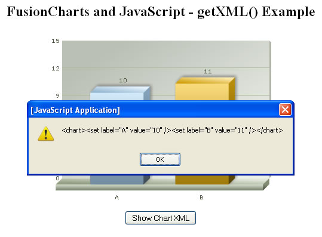
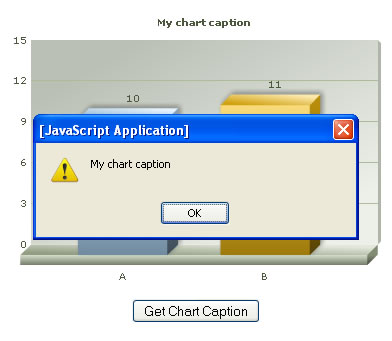

| FusionCharts, JavaScript and getXML() Method |
You can get the XML data of the charts generated by FusionCharts at client side using the getXML() method of each chart. In this section, we'll show you how to attain this. The first step is to set registerWithJS flag of chart as 1, as shown under: |
<div id="chart1div"> |
Thereafter, you can invoke the getXML() method of the chart object to print it. |
| <HTML> <HEAD> <TITLE>FusionCharts & JavaScript - Getting Chart XML Example</TITLE> <SCRIPT LANGUAGE="Javascript" SRC="../../FusionCharts/FusionCharts.js"></SCRIPT> <SCRIPT LANGUAGE="JavaScript"> function getChartXML(){ //Get chart from its ID var chartToPrint = getChartFromId("chart1Id"); alert(chartToPrint.getXML()); } </SCRIPT> </HEAD> <BODY> <CENTER> <h2>FusionCharts and JavaScript - getXML() Example</h2> <div id="chart1div"> FusionCharts </div> <script language="JavaScript"> var chart1 = new FusionCharts("../../FusionCharts/Column3D.swf", "chart1Id", "400", "300", "0", "1"); chart1.setDataXML("<chart><set label='A' value='10' /><set label='B' value='11' /></chart>"); chart1.render("chart1div"); </script> <center><input type='button' value='Show Chart XML' onClick='javascript:getChartXML();'></center> </CENTER> </BODY> </HTML> |
In the above code, we're first creating a Column 3D chart with DOM Id as chart1Id. We also register it with JavaScript. Thereafter, we've created a HTML button, which when clicked invokes the local getChartXML() function. This function just gets the reference to the chart using getChartFromId() function and finally invokes the getXML() method on the chart. If you're specifying the data of the chart using dataURL, make sure to call getXML() only in FC_Rendered event of the chart, as before that the chart will not return the correct XML. When you run the above code, you should see something as under: |
|  |
| Getting <chart> attribute value |
| If you wish to get the attribute value specified for <chart> element in the XML, you can use getChartAttribute(attributeName) API as under: |
| <HTML> <HEAD> <TITLE>FusionCharts & JavaScript - Getting Chart Attribute Example</TITLE> <SCRIPT LANGUAGE="Javascript" SRC="../../FusionCharts/FusionCharts.js"></SCRIPT> <SCRIPT LANGUAGE="JavaScript"> function getChartAttrib(){ //Get chart from its ID var chartToPrint = getChartFromId("chart1Id"); alert(chartToPrint.getChartAttribute('caption')); } </SCRIPT> </HEAD> <BODY> <CENTER> <h2>FusionCharts and JavaScript - getChartAttribute() Example</h2> <div id="chart1div"> FusionCharts </div> <script language="JavaScript"> var chart1 = new FusionCharts("../../FusionCharts/Column3D.swf", "chart1Id", "400", "300", "0", "1"); chart1.setDataXML("<chart caption='My chart caption' ><set label='A' value='10' /><set label='B' value='11' /></chart>"); chart1.render("chart1div"); </script> <center><input type='button' value='Get Chart Caption' onClick='javascript:getChartAttrib();'></center> </CENTER> </BODY> </HTML> |
| Here, we've first defined the caption attribute of chart in XML as 'My Chart Caption'. Thereafter, we've defined a button which when clicked calls the getChartAttribute('caption') method to retrieve the caption. When you run this code, you should get something as under: |
|  |
| If the attribute was not initially specified in XML or an empty value was specified, the chart returns "null" value. |